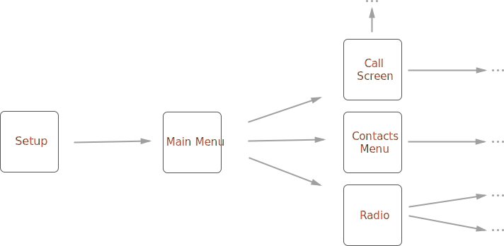
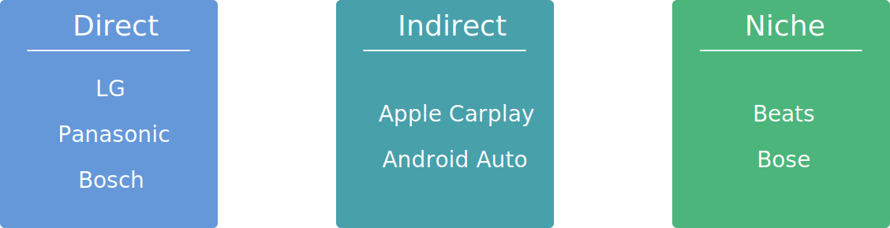
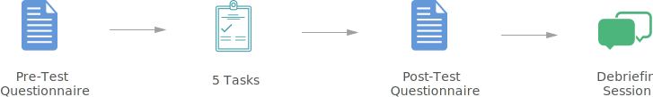

- Date: January 2016 - April 2017
- Role: UX Researcher
- Work Setting: Team of 4
As part of a class project, my team and I worked with Harman on their Orinoco car infotainment system. We conducted usability assessment with the goal of making Orinoco's user interface more effective and useful to customers. Our work was under an NDA, so I cannot show sensitive information on this page.
To understand the interaction flows in the Orinoco system, we created an interaction map

We conducted 4 interviews with members of our target audience: drivers and passengers that use car infotainment systems. This reserach method helped us emphatize with our users and understand their needs. Among other things, we gathered information about the following areas:
- What are some issues that people are currently experiencing while driving or riding as a passenger
- General car user behavior and needs
- How people use their car infotainment systems
- What are current problems with infotainment systems
- How familiar people are with the capabilities of their infotainment system
Based on our interviews, we developed a better understanding of our target users and constructed user personas.


In order to understand the problem better, and to assess existing solutions, we conducted competitive analysis:

Our final design strived to incorporate various functions to solve the problems of mid level self-taught guitar learners

In order for the device to be able to manipulate the video content, a video player needed to be designed. Our interviews showed that learners typically use a desktop when trying to learn a guitar.

The video player was designed to allow learners to bring different content on and off the screen on-demand. This was aimed to enable users to customize their lesson to fit their needs.
Finally, we assembled all of our findings into a comprehensive usability assessment report, which we delivered to our client. We also presented our findings and recommendations to various stakeholders at Harman's office. The recommendations were to be used for guiding the upcoming iterations of Orinoco's evolution.